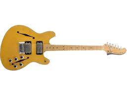

Gitara je muzički instrument sa drevnim korenima koji se koristi u velikom broju muzičkih stilova. Obično ima šest žica, ali postoje i gitare sa četiri, sedam, osam, deset i dvanaest žica.
Gitare su prepoznate kao jedan od primarnih instrumenata u bluzu, kantri, flamenku, rok muzici i mnogim oblicima popa. Tu je i solo klasični instrument. Gitare se mogu svirati akustično, gde se ton proizvodi vibracijom žica i modulira šupljim telom, ili se mogu oslanjati na pojačalo koje može elektronski da manipuliše tonom. Takve električne gitare su predstavljene u 20. veku i nastavljaju da imaju dubok uticaj na popularnu kulturu.
Električna gitara je gitara kojoj je potrebno spoljno pojačanje da bi se čula na tipičnoj jačini zvuka. Koristi jedan ili više pickupova za pretvaranje vibracija svojih žica u električne signale, koji se na kraju reprodukuju kao zvuk preko zvučnika. Zvuk se može oblikovati ili elektronski menjati da bi se postigle različite tembre ili tonalne kvalitete, što ga čini sasvim drugačijim od akustične gitare. Često se to radi upotrebom efekata kao što su reverb, distorzija i "overdrive"; ovo drugo se smatra ključnim elementom električne bluz gitarske muzike i sviranja rok gitare.
Izmišljenu 1932. godine, električnu gitaru su usvojili džez gitaristi, koji su želeli da sviraju solo gitare na jednoj toni u velikim big bend ansamblima. Rani zagovornici električne gitare na albumu su Les Paul, Lonnie Johnson, Sister Rosetta Tharpe, T-Bone Valker i Charlie Christian. Tokom 1950-ih i 1960-ih, električna gitara je postala najvažniji instrument u popularnoj muzici. Evoluirao je u instrument koji je sposoban za mnoštvo zvukova i stilova u žanrovima od popa i roka do kantri muzike, bluza i džeza. Služio je kao glavna komponenta u razvoju električnog bluza, rokenrola, rok muzike, hevi metal muzike i mnogih drugih žanrova muzike.
Dizajn i konstrukcija električne gitare uveliko variraju u obliku tela i konfiguraciji vrata, bridža i pickupa. Gitare mogu imati fiksni most ili preklopni most sa oprugom, koji omogućava igračima da "savijaju" visinu tona ili akorda nagore ili nadole, ili da izvode vibrato efekte. Zvuk električne gitare se može modifikovati novim tehnikama sviranja kao što su savijanje žica, tapkanje i udaranje, korišćenjem audio povratnih informacija ili sviranja na kliznoj gitari.
Postoji nekoliko tipova električnih gitara, uključujući: gitaru sa čvrstim telom; razne vrste šupljih gitara; gitara sa šest žica (najčešći tip), koja se obično štimuje E, B, G, D, A, E, od najviših do najnižih žica; gitara sa sedam žica, koja obično dodaje nisku B žicu ispod niske E; gitara sa osam žica, koja obično dodaje nisku E ili F# žicu ispod niske B; i gitaru sa dvanaest žica, koja ima šest pari žica.
U pop i rok muzici, električna gitara se često koristi u dve uloge: kao ritam gitara, koja svira sekvence ili progresije akorda, i rifove, i postavlja ritam (kao deo ritam sekcije); i kao glavna gitara, koja daje instrumentalne melodijske linije, melodijske instrumentalne pune pasaže i sola. U maloj grupi, kao što je pover trio, jedan gitarista se prebacuje između obe uloge. U velikim rok i metal bendovima često postoje ritam gitarista i vodeći gitarista.